1. Overview: Stochastic Methods for Data Analysis#
This chapter is adapted from AM207 (Harvard, Fall 2021). Watch the recorded lecture.
1.1. What is this book about?#
How Do We Model Patterns in Data?#
This is a scatter plot of home prices vs square footage of some homes in southern California.

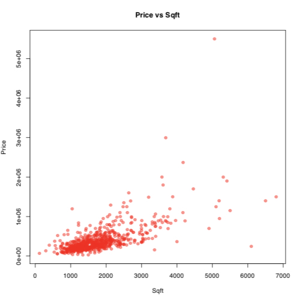
Can you see any patterns or trends?
We see that as square footage increases, so does price.
But what is a precise, mathematical description of this relationship?
What is a Model?#
Building a model to capture a hypothesized relationship means we predict the value of one group of attributes using another group.
This prediction problem is called regression, the attribute we are trying to predict (e.g.price) is called the outcome or the target, denoted by \(y\).
The group of attributes (e.g. square footage) we use to make the prediction is called the covariates, denoted by \(x\).
A regression model is a mathematical function, \(f(x)\), that predicts the target. We denote our prediction by \(\hat{y} = f(x)\).
We conjectured that the model for this data is a line: \(\hat{y} = f(x) = w_1x + w_0\).

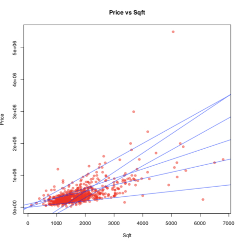
But which line fits the data best?
A Notion of Error#
An absolute residual is the absolute difference between the actual price of a home and the price predicted by the line for a given square footage:

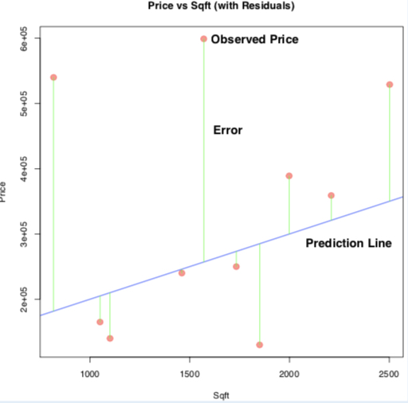
How do we quantify the overall error?#
(Max absolute deviation) Count only the biggest “error”
\[ \max_n |y_n - \hat{y}_n| \](Sum of absolute deviations) Add up all the “errors”
\[ \sum_n |y_n - \hat{y}_n| \](Sum of squared errors) Add up the squares of the “errors”
\[ \sum_n |y_n - \hat{y}_n|^2 \](Mean squared errors) We can also average the squared “errors”.
\[ \frac{1}{N}\sum_{n=1}^N |y_n - \hat{y}_n|^2 \]
Again, \(y_n\) is the observed target, \(\hat{y}_n\) is the predicted target.
Model Fitting#
Question: What do we mean by choosing “best” line, \(\hat{y} = w_1x + w_0\)?
The model fitting process:
Choose an overall error metric. This metric is called the loss function or training objective:
\[ \mathcal{L}(w_1, w_0) = \frac{1}{N}\sum_{n=1}^N |y_n - (w_1x_n + w_0)|^2, \quad\quad \text{(Mean Squared Error Loss)} \]Set up the problem of finding coefficients or parameters, \(w_0, w_1\), such that the loss function is minimized:
\[ \underset{w_0, w_1}{\mathrm{argmin}}\mathcal{L}(w_1, w_0) = \underset{w_0, w_1}{\mathrm{argmin}}\frac{1}{N}\sum_{n=1}^N |y_n - (w_1x_n + w_0)|^2 \]Choose a method of minimizing the loss function.
Note: For linear regression, we can minimize \(\mathcal{L}\) analytically. We cannot do this for every model!
Going deeper: Linear Regression in sklearn
**import the LinearRegression model from the sklearn library**
from sklearn.linear_model import LinearRegression
**make an instance of the linear regression model**
regression = LinearRegression()
**find the coefficients for the line that minimizes mean squared error**
regression.fit(x_train, y_train)
What is a Statistical Model?#
Perhaps our choice of an overall error can be less arbitrary if we explain how, we believe, the residual arise.
Belief: The theoretical relationship between price and square footage (\(x\)) is given by \(f(x)\). But, in real-life, due to unpredictable circumstances observed prices (\(y\)) differ from \(f(x)\) by some random amount, \(\epsilon\), called noise:
A statistical model is one that explicitly accounts for uncertainty or randomness.
A Statistical Model for Regression#
Let us assume that (1) the underlying relationship between price and square footage \(x\) is given by \(f(x) = w_1x + w_0\); (2) that the observed price \(y\) deviates from \(f(x)\) by a random amount that is independent from \(x\) and is distributed as \(\mathcal{N}(0, 1)\):
Note that \(y\) is now a random variable with distribution \(\mathcal{N}(f(x), 1)\), denoted by \(p(y|x, w_1, w_0)\).
How Do We Quantify Fitness?#
Given our statistical model, a natural way for quantifying how well \(f(x) = w_1x + w_0\) fits the data is by checking how likely our choice of \(w_0\) and \(w_1\) makes the observed data, i.e. compute
The function \(\mathcal{L}(w_1, w_0)\) is called the likelihood function.
Exercise: suppose we have two models, \(f(x) = 3x + 2\) and \(f(x) = 10 - x\). Suppose that \(\mathcal{L}(w_1=3, w_0=2) = 10.2\) and \(\mathcal{L}(w_1=-1, w_0=10) = 0.002\). Which model is a better fit for the data and why?
Model Fitting#
Question: What do we mean by choosing “best” line, \(\hat{y} = f(x) = w_1x + w_0\)?
The model fitting process:
Choose a method of estimation for statistical models. For example, set up the problem of finding coefficients or parameters, \(w_0, w_1\), such that the likelihood of the data is maximized:
\[ \mathrm{argmax}_{w_0, w_1}\mathcal{L}(w_1, w_0) = \mathrm{argmax}_{w_0, w_1}\prod_{n=1}^N p(y_n|x_n, w_1, w_0) \]Choose a method of computing the estimate. For example, choose a way to maximize the likelihood.
Maximum Likelihood and Minimum Mean Square Error#
Given our statistical model
Maximizing the likelihood is equivalent to minimizing the mean squared error:
Hint: note that
and that
Model Evaluation#
After fitting the model (finding coefficients that maximizes the likelihood or that minimizes the loss function), we need to check the error or residuals of the model. Why?

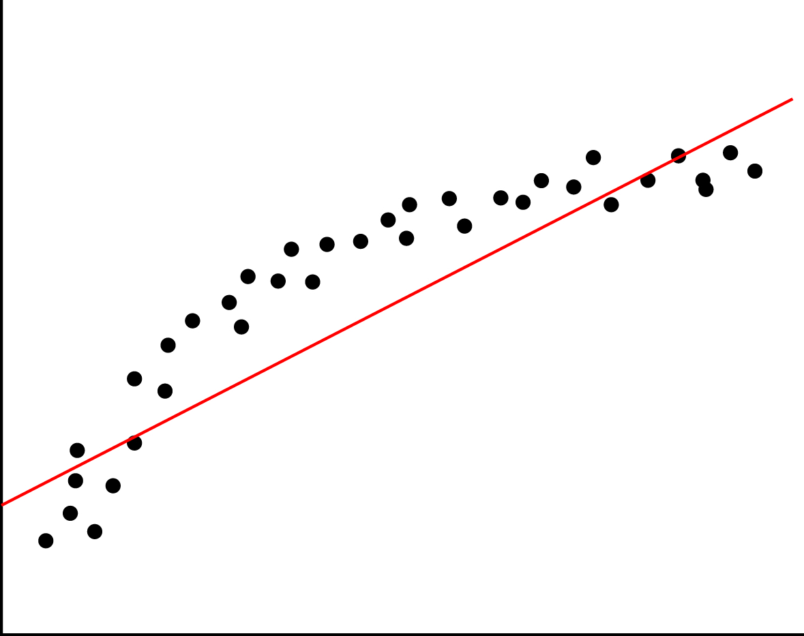
Working with statistical models gives us an advantage in model evaluation, can you see why?
Model Interpretation#
In addition to evaluating our model on training and testing data, we must also examine the coefficients themselves. Why?

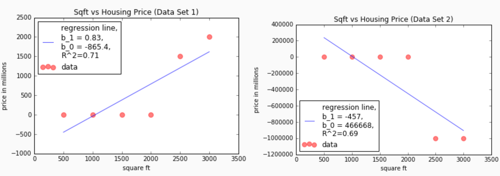
What is a Bayesian Model?#
In addition to a statistical model that explains trends \(f(x)\) and observation noise \(\epsilon\), we also want to incorporate our prior beliefs about the model. Finally, we want to obtain a measure of uncertainty for our parameter estimates as well as our predictions.
Our Bayesian model for linear regression:
where the prior \(p(w_i)\) may express that we want \(w_i\) to be non-negative and not too large.
Model Inference#
How do we “learn” the parameters in a Bayesian model?
Bayes’ Rule gives us a way to obtain a distribution over \(w_1, w_0\) given the data \((x_1, y_1), \ldots, (x_N, y_N)\):
The distribution \(p(w_1, w_0 | x_1, \ldots, x_N, y_1, \ldots, y_N)\) is called the posterior and gives the likelihood of a pair of parameters \(w_1, w_0\) given the observed data.
We see that the likelihood score of the parameters under the posterior is influence both by how well the parameters fit the data and how well the parameters fit our prior beliefs.
Bayesian Linear Regression#
When we choose normal priors for the parameters in a linear regression model, for example,
The posterior \(p(w_1, w_0 | x_1, \ldots, x_N, y_1, \ldots, y_N)\) is again a (multivariate) normal distribution, \(\mathcal{N}(\mu, \Sigma)\), and we can derive closed form solutions for \(\mu\) and \(\Sigma\).
Why is this observation important?
Bayesian versus Frequentist Uncertainty#
The main advantage of the Bayesian approach is that rather than obtaining a single “best” estimate of the model parameters, the posterior gives us a distribution over a set of plausible model parameters (with some models being more likely than others).
The spread of this distribution over plausible models naturally gives us a way to quantify our uncertainty over which is the “best” model. When the spread is wide (when many very different models are equally very likely), our uncertainty is high. When the spread is narrow (when all likely models look very similar), our uncertainty is low.
We can also obtain a sense of uncertainty over models using the non-Bayesian probabilistic model. Typically, we randomly sample sets of training data point from the training data, on each set, we compute the MLE of the model parameters. This process is called bootstrapping.
In the problem set at the end of this chapter you will compare the uncertainties from the posteriors of Bayesian models with those from bootstrapping maximum likelihood models.
Model Evaluation#
With a Bayesian model we get a distribution \(p(w_1, w_0| \text{Data})\) over likely functions rather than a single function \(f(x) = w_1x + w_0\). How then do we evaluate the “error” of model?
In the Maximum Likelihood model, we can explicitly check the correctness of our assumptions by checking the distribution of the residuals. How do we criticize a Bayesian model?
Why is This Hard?#
Stating that our goal is to maximize likelihood or minimize MSE is easy. Finding the optimal parameters is often very hard (especially if \(f(x)\) is not linear, but rather, a complex function represented by a neural network).
If we choose more “interesting” or “expressive” priors, or if we choose more complex \(f(x)\), then it is often the case that the posterior cannot be computed in closed form.
Both model fitting and inference requires sophisticated algorithms derived from deep theoretical understanding of the models.
Is Accuracy Enough?#
We mentioned that we can get predictive uncertainty from maximum likelihood models by bootstrapping and that Bayesian models naturally give us a sense of predictive uncertainty. These are useful properties that are important for real-life applications.
When machine learning models are applied to safety-critical, risk-averse domains such as precision health care, financial and criminal justice systems, reliable measurements of a model’s predictive uncertainty may be as crucial as correctness of its predictions.

What Kinds of Predictive Uncertainty Do We Want?#
Predictive uncertainty helps us quantify risk in down-stream tasks:

We also care about the source of uncertainty:

What information about the data/model do we want our uncertainties to capture?
Epistemic Uncertainty asks which function fits our data. Epistemic uncertainty arises due to small number of samples across all scenarios. This can be reduced by more samples!
Aleatoric Uncertainty: asks what is the level of randomness that underlies the data generation process. This is irreducible.

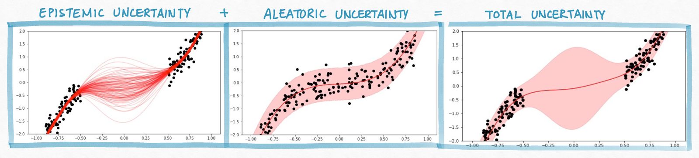
So Now You Have Predictive Uncertainties, What Are You Gonna Do With Them?#
In Efficient Out-of-Distribution Detection in Digital Pathology Using Multi-Head Convolutional Neural Networks (Linmans et al, Medical Imaging with Deep Learning 2020), the authors train an uncertainty-aware neural network model to detect breast cancer metastasis.
The epistemic uncertainty is used during test time to detect new types of breast tissue images that were not included in the training data. Classification of these novel types of images can be deferred to a human.
Unfamiliar types were caught at test time with AUC of .98.

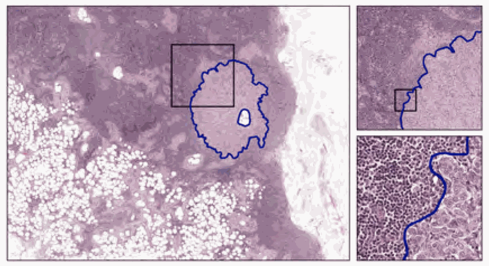
How Do We Explain Decisions of Machine Learning Models?#
In order for human decision makers to interact with machine learning models meaningfully, we need these models to be interpretable. But explanation complex models is difficult.

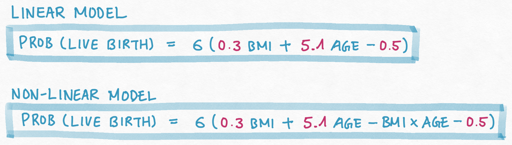
How Do You Communicate ML Predictions, And Does It Matter?#
In An explainable deep-learning algorithm for the detection of acute intracranial haemorrhage from small datasets (Lee et al, Nature Biomedical Engineering, 2019), the authors build a neural network model to detect acute intracranial haemorrhage (ICH) and classifies five ICH subtypes.
Model classifications are explained by highlighting the pixels that contributed the most to the decision. The highlighted regions tends to overlapped with ‘bleeding points’ annotated by neuroradiologists on the images.

What Interactions Do We Need to Think About When We Design ML Models?#
We tend to think of modeling as a purely mathematical or engineering feat, but in many cases the model has a complex interaction with a human decision maker.
We also tend to think of the tech and the user as a closed system. but your tech is actually one cog in a complex social-technical system, your intended use is just one actor in a web of stakeholders.
We not only need to worry about the performance of the model, we also need to worry about the performance the combined system of Human + AI.

The Promises of Human + AI Systems#
In Consistent Estimators for Learning to Defer to an Expert (Mozannar et al, International Conference on Machine Learning, 2020), the authors trains a model that decides when (and how) to classify an input and when to defer the decision to an human expert.
The joint Human + AI system can be superior to both components.

The Perils of Human + AI Systems#
In How machine-learning recommendations influence clinician treatment selections: the example of antidepressant selection (Jacobs et al, Translational Psychiatry, 2021), the authors found that clinicians interacting with incorrect recommendations paired with simple explanations experienced significant reduction in treatment selection accuracy.

Incorrect ML recommendations may adversely impact clinician treatment selections and that explanations are insufficient for addressing overreliance on imperfect ML algorithms.


Why Is This Happening?#
Bias in tech is not an algorithmic or math problem; it is a people problem, it is about neglecting the human dimension and inextricably linked with diversity & representation in the ways we approach problem solving.

Alternative Problem Solving Frameworks for Machine Learning#
Machine learning is making a movement away from traditional design frameworks and problem solving methodologies.

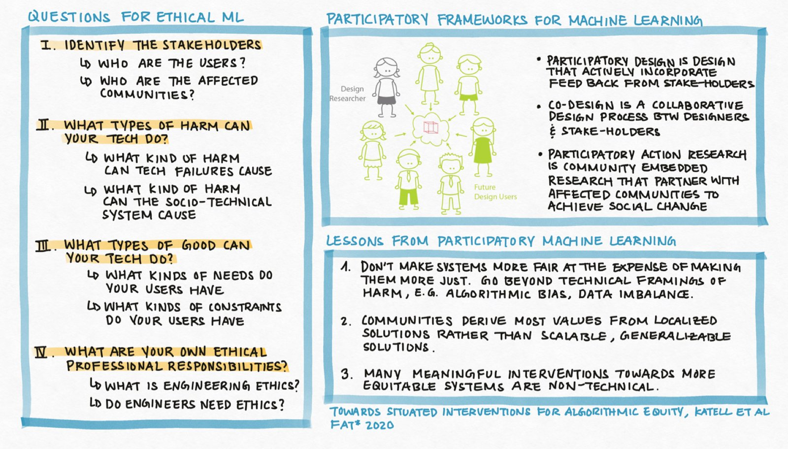
Machine Learning: Much More Than Accuracy#
Machine learning is much more than engineering for abstract performance metrics. Increasingly the field is grappling with the role digital technology is playing in our entire socio-technical system.
Machine learning and data science are interdisciplinary fields that require people with diverse skill-sets/backgrounds to work closely and cooperatively.
There is also increasing calls for machine learning/data science researchers to engage meaningfully with social, economic, political, cultural and ethical impacts of their work when embedded in complex human institutions.

1.2. Summary#
(Fitting Probabilistic Models) Given a probabilistic model with parameters \(\theta\), i.e. a model that explicitly accounts for the noise in the data. We learn \(\theta\) that maximizes the likelihood of the observed data.
Sanity Check: What is the noise model for the binomial model of coin tosses?
(Maximizing the Likelihood) Maximizing the likelihood over \(\theta\) is an optimization problem. In an optimization problem, we by convention turn every maximization problem (e.g. maximize \(g(\theta)\)) into a minimization problem (e.g. minimize \(-g(\theta)\)) and then:
if there are no constraints, we identify the stationary points of the objective function and verify that the objective function is convex. In this case, the stationary points are local min, and every local min is a global min.
if there are constraints, we identify the stationary points of the Lagrangian and verify that the objective function is convex and the equality constraints are affine. In this case, every stationary point is a global min.
(Why MLE) Why should we learn \(\theta\) to maximize the likelihood? What is the philosophical basis for performing MLE?
(What Are Desirable Properties of Estimators) If we have a method to produce an estimate \(\widehat{\theta}\) of the true model parameters \(\theta\), what properties would we want from our estimate?
(Consistency) What is consistency and why do we, as practitioners, care?
(Unbiasedness) What is unbiasedness and why do we, as practitioners, care?
(Minimum Variance) What is minimum variance and why do we, as practitioners, care?
(Why Not MLE) Which properties does MLE have? And which ones does it lack? What does this mean for practitioners using MLE - what do we need to watch out for?
(Uncertainty) We said that maximize the likelihood gives us one “best” estimate of the model parameters. But how can we get uncertainty on our estimates (e.g. what is bootstrapping)?
1.3. Exercises#
These problems were originally assigned as homework. Data files are in the book’s data/ folder. Worked solutions, where available, are collapsed beneath the questions they answer; try each problem before expanding them.
Problem Set: Review of Statistical Modeling and Scientific Computing#
Exercise: Part I: Maximum Likelihood Estimators for Linear Regression
In this problem, you are given a dataset with a single predictor \(X\) representing patient age (in years) and a single outcome \(y\) representing diastolic blood pressure (in mm Hg), and your task is to fit a linear model to the data. The fitted model will be deployed in a hospital setting, where the model predictions will inform patient treatment.
The dataset is saved as HW0_data.csv in CSV (Comma Separated Values) format and can be read using the .read_csv() function from the pandas library.
Assume that the outcome \(y\) can be modeled by the following process:
where \(w_1\) and \(w_0\), the parameters of the function \(f\), are unknown constants.
(Model Building) Write the analytical expression for the likelihood function \(p(y|x, w_1, w_0)\), for a single observation \((x, y)\). Write the analytical expression for the likelihood function \(\prod_{n=1}^N p(y_n|x_n, w_1, w_0)\) for an entire dataset of \(N\) number of observations.
Hint: for a given \(x\) and fixed parameters, what is the distribution of \(y\)?
Solution: Part I, Question 1
Since \(\epsilon\) in the above model is a random variable, so is \(y\). Since \(w_1\) and \(w_0\) are constants, the distribution of \(y\) should be that of \(\epsilon\) translated by \(f(x)\). That is,
The joint likelihood for an entire dataset of \(N\) observations is therefore:
(Defining a Learning Objective) The Maximum Likelihood Estimators (MLE) of \(w_1\) and \(w_0\) are defined as
\[\begin{aligned} w^{\text{MLE}}_1, w^{\text{MLE}}_0 = \underset{w_1, w_0}{\mathrm{argmax}}\; \prod_{n=1}^N p(y_n|x_n, w_1, w_0) \end{aligned}\]Show that finding \(w_1\) and \(w_0\) that maximizes the likelihood is equivalent to finding parameters that minimize the Mean Squared Error (MSE) of your model.
Hint: show that maximizing the log likelihood is equivalent to minimizing the MSE.
Solution: Part I, Question 2
Recall that the logarithmic functions are monotone – if \(z_1 < z_2\) then \(\log(z_1) < \log(z_2)\). This means that the values \(w_1, w_0\) that will maximize the likelihood \(\prod_{n=1}^N p(y | x, w_1, w_0)\) are the same ones that will maximize the log-likelihood \(\log \prod_{n=1}^N p(y | x, w_1, w_0)\) (and vice versa). Hence, maximizing the likelihood is equivalent to maximizing the log-likelihood:
Now the log-likelihood can be simplified, applying the properties of logarithmic functions
Note that the first term, \(N \log \left[ \frac{1}{\sqrt{2\pi 0.5}} \right]\), in the simplified expression of the log-likelihood is a constant (doesn’t depend on \(w_1\) and \(w_0\)), therefore, maximizing the log-likelihood is equivalent to minimizing the term that is subtracted from the first term:
The last equivalence in the above is the expression for the minimum MSE estimates for \(w_1\) and \(w_0\).
Thus, we see that maximizing the log-likelihood (and hence the likelihood) is equivalent to minimizing the mean squared error.
(Model Fitting) Analytically derive the formulae for MLE of \(w_1\) and \(w_0\). Describe what information you would need in order prove that the parameters you derived maximizes the likelihood (or minimizes the MSE)?
Optional but Useful: express your derivation of the MLE in matrix notation (i.e. perform matrix calculus).
Hint: this part requires multivariate calculus.
Solution: Part I, Question 3
From Question 2, we see that maximizing the likelihood is equivalent to minimizing the MSE:
From calculus, we know that the global minimum of a function over the entire domain of possible inputs must occur at stationary points (points where the gradient is zero) if such a global min exists at all. So we first compute the gradient of the expression for MSE, which is a vector of the two partial derivatives of the MSE:
Each partial derivative can be computed as:
We set the gradient to zero and solve for the stationary point \((w^*_0, w^*_1)\):
You can solve the above system of linear equations in any number of ways. For example, we can solve the second equation for \(w_0\):
Then we can substitute our solution for \(w_0\) into the first equation and solve for \(w_1\):
To summarize, we’ve derived that the gradient has a unique stationary point at
In order to show that the MSE is minimized at the point \((w^*_0, w^*_1)\), we need to show that the mean square error of our linear model is convex. This means, in case you are interested, we need to compute the Hessian of the MSE function (the ‘second derivative’) and verify that it is positive definite (the multivariable version of ‘the second derivative is positive’).
Derivation in Matrix Notation
Let \(w\) denote a vector of both the slope and the intercept, \(w = [w_1\;\; w_0]^\top \in \mathbb{R}^{2\times 1}\). Let \(\mathbf{x}_n\) represent a vector with the \(n\)-th input and a constant 1, \( \mathbf{x}_n = [x_n\;\; 1]\). Thus, we can represent \(w_1 * x_n + w_0\) as the inner product of two vectors, \(w^\top\mathbf{x}_n\).
Thus, the mean square error can be expressed as
We can further simplify the MLE expression by introducing more matrix notation. Let \(\mathbf{y}\) denote the vector of observed output, \(\mathbf{y} = [y_1\;\; \ldots y_N]^\top \in \mathbb{R}^N\). Let \(\mathbf{X}\) be the matrix of inputs, augmented with a column of 1’s, \(\mathbf{X} = \left[\begin{array}{cc} x_1 & 1\\\vdots &\vdots\\ x_N & 1 \end{array}\right]\). Then we can recognize that the sum of squares in the MSE expression is the inner product of two vectors
When minimizing the matrix form of the MSE, we take the matrix derivative with respect to the vector \(w\):
We set the derivative to 0 and solve for the roots:
(Model Evaluation) Using the
LinearRegressionclass fromsklearn.linear_model, fit a linear regression model to the dataset inHW0_data.csv. When you call the.fit()function ofLinearRegression, the default is to find parameters that minimize MSE.Visualize the linear function you fitted as well as the data in one plot. Visualize a histogram of the residuals.
Interpret the clinical meaning of the parameters \(w_0, w_1\).
Using the plots and your interpretation of the model parameters, argue for whether or not your model is appropriate for the data.
Hint: look at the assumptions you’ve made in your modeling process, which assumptions are supported by the data, which are contradicted by the data?
Solution: Part I, Question 4
First, we read in the data as a pandas DataFrame using the .read_csv() function from pandas. We inspect the first 5 rows of the data frame.
df = pd.read_csv('../data/HW0_data.csv')
df.head()
x y
0 -1.989678 1.493437
1 4.031862 24.280045
2 1.356093 22.583479
3 -5.069544 -6.976054
4 2.464958 22.710081
We get a sense of the data by scatter plotting it.
fig, ax = plt.subplots(1, 1, figsize=(10, 5))
ax.scatter(df['x'].values, df['y'].values, color='black', alpha=0.3, label='training data')
ax.set_xlabel('x')
ax.set_ylabel('y')
ax.set_title('Scatter Plot of the Dataset Given')
ax.legend(loc='best')
plt.show()
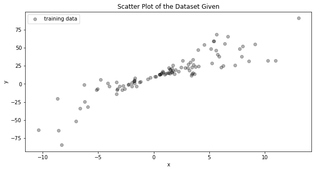
We make an instance of the LinearRegression class and fit it to our data.
linear_model = LinearRegression()
x = df['x'].values.reshape((-1, 1))
y = df['y'].values
linear_model.fit(x, y)
Using our fitted LinearRegression model, we predict the \(y\) values given the \(x\) values of our training data. From this, we compute the residuals (individual prediction errors).
From the fitted LinearRegression model we extract the regression parameters.
#use fitted model to predict on training data
y_predict = linear_model.predict(x)
#compute residuals
residuals = y - y_predict
#extract MLE for slope
slope_mle = np.round(linear_model.coef_[0])
#extract MLE for intercept
intercept_mle = np.round(linear_model.intercept_)
fig, ax = plt.subplots(1, 2, figsize=(20, 5))
#scatter plot training data
ax[0].scatter(df['x'].values, df['y'].values, color='black', alpha=0.3, label='training data')
#plot predction as a trend line
ax[0].plot(x, y_predict, color='red', label='MLE model: {}x + {}'.format(slope_mle, intercept_mle))
ax[0].set_xlabel('x')
ax[0].set_ylabel('y')
ax[0].set_title('Visualization of the MLE model and training data')
ax[0].legend(loc='best')
#plot a histogram of the residuals
ax[1].hist(residuals, bins=25, density=True, color='red', alpha=0.8)
ax[1].set_title('Histogram of residuals')
ax[1].set_xlabel('Residual value')
ax[1].set_ylabel('Relative frequency')
plt.show()

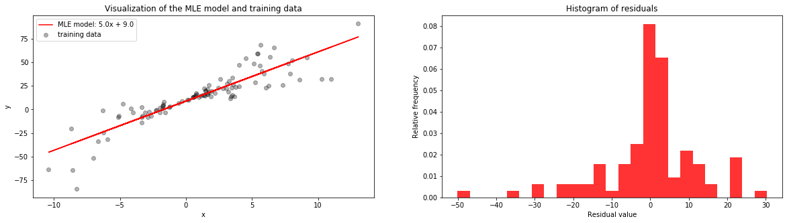
From the histogram of the residuals (on the right), we can see that the residuals are not normally distributed as we assumed in our model. From the plot of the training data with our fitted model, we can see that (1) the trend or mean of the data looks to be linear, as we assumed, but (2) the y-values are not distributed about the trend in an equally noisy way. That is, for some values of \(x\) the \(y\) values vary greatly from the trend (the noise is high) and for some \(x\) values the \(y\) values closely follow the trend (the noise is low). I.e. the noise variance depends on the value of \(x\).
We may conclude that a linear model may still be a good fit for the data, but our assumption that the noise is normally distributed and independent from \(x\) do not seem to hold.
Not covered here: the clinical interpretation of the parameters \(w_0, w_1\).
Exercise: Part II: Bayesian Linear Regression
In this problem, your task is to perform Bayesian linear regression on the dataset in HW0_data.csv.
Assume that the outcome \(y\) can be modeled by the following process:
In this model, we assume the same likelihood as in Part I, but we also include priors for \(w_0\) and \(w_1\): \(p(w_0) = \mathcal{N}(0, 1)\), \(p(w_1) = \mathcal{N}(0, 0.5)\)
(Inference) Analytically derive the joint posterior distribution over the parameters. That is, analytically compute
\[\begin{split}\begin{aligned} p(w_1, w_0 | y_1, \ldots y_n, x_1, \ldots, x_n) = \frac{\left(\prod_{n=1}^Np(y_n|x_n, w_1, w_0)\right)p(w_1)p(w_0)}{\prod_{n=1}^Np(y_n|x_n)}.\\ \end{aligned}\end{split}\]
Hint: The posterior of a model with a Gaussian (or normal) likelihood and Gaussian priors is yet again Gaussian. This derivation is included in many machine learning textbooks like Machine Learning: a Probabilistic Perspective by Murphy or Pattern Recognition and Machine Learning by Bishop. This derivation also appears online in many course notes - you are welcomed to use any and all available resources.
Solution: Part II, Question 1
Using the matrix notation we introduced in Part I, Question 3, we can rewrite the likelihood using matrix notation:
where \(I_{N}\) is the \(N\times N\) identity matrix. We see that the joint likelihood is just a multivariate Gaussian with mean \(\mathbf{X}w\) and a diagonal covariance matrix (the entries on the diagonal of this matrix is \(\sigma^2\)). Let’s denote \(\sigma^2I_{N}\) by \(\Sigma\).
Let’s also express the prior as a multivariate Gaussian. Since the \(p(w_0)\), \(p(w_1)\) are both univariate Gaussians and we’ve assumed in our prior that they are independent, the joint distribution over \(w_0\) and \(w_1\) is a bivariate Gaussian with mean \(m = [0\;\; 0]\) and covariance matrix \(S = \left[\begin{array}{cc} 0.5 & 0\\ 0 & 1 \end{array} \right]\):
Now the posterior can be expressed as
where \(A = \left(S^{-1} + \mathbf{X}^\top\Sigma^{-1}\mathbf{X}\right)\) and \(b = \left(\mathbf{y}^\top \Sigma^{-1}\mathbf{X} + m^\top S^{-1} \right)\).
In the last line of the above, we see that the inside of the exponential function is almost a matrix square, to complete the square (and factor the expression) we need to add and subtract the term \(bA^{-1} b^\top\):
Finally, we see that the posterior \(p(w | \mathbf{y}, \mathbf{X})\) has the form of a multivariate Gaussian, with mean \(A^{-1}b^\top\) and covariance \(A^{-1}\). That is,
In our case, we have that \(\Sigma^{-1} = 2I_{N}\), \(m = [0\;\; 0]\) and \(S = \left[\begin{array}{cc} 0.5 & 0\\ 0 & 1 \end{array} \right]\). Hence, our posterior mean is
Our posterior covariance is
(Model Interpretation) Visualize the joint posterior over the parameters, \(p(w_1, w_0 | y, x)\) for the dataset in
HW0_data.csv(you may use a scatter plot of samples drawn from the posterior or a contour map/heat map of the pdf). In separate plots, visualize the marginal posterior distribution over each parameter,\[\begin{split}\begin{aligned} p(w_1 | y_1, \ldots y_n, x_1, \ldots, x_n) &= \int_{w_0} p(w_1, w_0 | y_1, \ldots y_n, x_1, \ldots, x_n) dw_0\\ p(w_0 | y_1, \ldots y_n, x_1, \ldots, x_n) &= \int_{w_0} p(w_1, w_0 | y_1, \ldots y_n, x_1, \ldots, x_n) dw_1\\ \end{aligned}\end{split}\]Is the information contained in the joint posterior \(p(w_1, w_0 | y_1, \ldots y_n, x_1, \ldots, x_n)\) equivalent to the information contained in the two marginals \(p(w_1 | y_1, \ldots y_n, x_1, \ldots, x_n), p(w_0 | y_1, \ldots y_n, x_1, \ldots, x_n)\)? That is, what does each distribution tell you?
Compute the variance of the marginal posterior distributions \(p(w_i | y_1, \ldots y_n, x_1, \ldots, x_n)\) empirically using samples from \(p(w_i | y_1, \ldots y_n, x_1, \ldots, x_n)\). What do the width of these intervals tell you about your confidence in the model’s estimation of the parameters?
Hint: it is not necessary to analytically derive the marginals \(p(w_i | y_1, \ldots y_n, x_1, \ldots, x_n)\). Recall that you can perform marginalization of a variable by sampling from the joint distribution and disregarding that variable.
Solution: Part II, Question 2
From Question 1, we see that the posterior \(p(w | \mathbf{y}, \mathbf{X})\) is a bivariate Gaussian with mean \(\mu\) and covariance \(\Sigma\) defined as below:
We visualize the joint posterior by sampling 200 points from \(\mathcal{N}(\mu, \Sigma)\) and scatter plotting these points.
For the posterior marginal distribution \(p(w_1 | y_1, \ldots y_n, x_1, \ldots, x_n)\), we simply histogram the first coordinates (representing \(w_1\)) of these 200 samples (disregarding the second coordinate). The same can be done for \(p(w_0 | y_1, \ldots y_n, x_1, \ldots, x_n)\).
x_matrix = np.hstack((x.reshape((-1, 1)), np.ones(x.shape)))
y_matrix = y.reshape((-1, 1))
prior_variance = np.diag((0.5, 1))
prior_precision = np.linalg.inv(prior_variance)
#defining the posterior variance
joint_variance = np.linalg.inv(prior_precision + 2 * x_matrix.T.dot(x_matrix))
#defining the posterior mean
joint_mean = joint_variance.dot(x_matrix.T.dot(y_matrix)) * 2
#sampling 200 points from the posterior
posterior_samples = np.random.multivariate_normal(joint_mean.flatten(), joint_variance, size=200)
fig, ax = plt.subplots(1, 1, figsize=(10, 5))
#visualize the joint posterior
ax.scatter(posterior_samples[:, 0], posterior_samples[:, 1], color='blue', alpha=0.3, label='samples from the joint posterior')
ax.set_xlabel('w_1')
ax.set_ylabel('w_0')
ax.set_title('Visualization of the joint posterior')
ax.legend(loc='best')
plt.show()

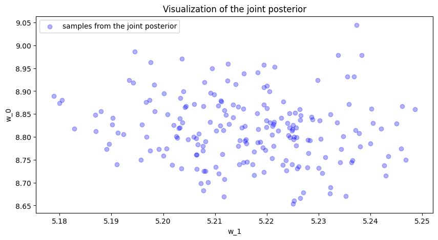
fig, ax = plt.subplots(1, 2, figsize=(20, 5))
#visualize the posterior marginal of w_1
ax[0].hist(posterior_samples[:, 0], density=True, color='green', bins=10, alpha=0.5)
ax[0].set_xlabel('Values of w_1')
ax[0].set_ylabel('Relative Frequency')
ax[0].set_title('Visualization of the posterior marginal of w_1')
#visualize the posterior marginal of w_0
ax[1].hist(posterior_samples[:, 1], density=True, color='purple', bins=10, alpha=0.5)
ax[1].set_xlabel('Values of w_0')
ax[1].set_ylabel('Relative Frequency')
ax[1].set_title('Visualization of the posterior marginal of w_0')
plt.show()

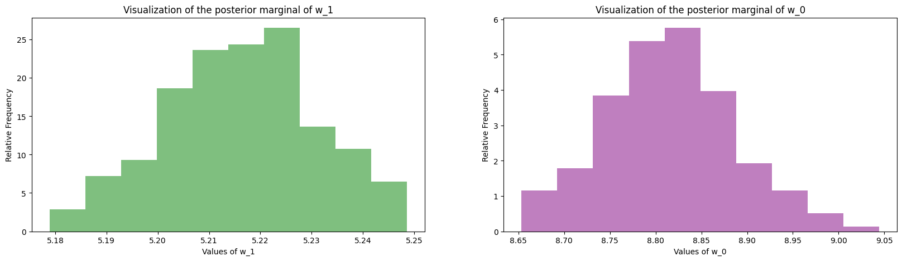
The information contained in the joint posterior is not equivalent to the two marginals. The posterior marginals alone tell you how each parameter is distributed but they cannot tell you how the two parameters are correlated, and such correlations are important for understanding how the parameters are related. For example, if the slope is estimated to be 4, then in order to produce a good fit for the data, our choices of the intercept must be limited to a specific range. The joint posterior distribution describes both the independent distributions of each parameter as well as their correlation (from the visualization of the joint, you can see that the Gaussian has a slight negative trend – i.e. slope and intercept are negatively correlated).
We can also summarize each marginal posterior by its median and its 95% interval:
slope_lower = np.percentile(posterior_samples[:, 0], 2.5)
slope_higher = np.percentile(posterior_samples[:, 0], 97.5)
slope_mean = np.percentile(posterior_samples[:, 0], 50)
intercept_lower = np.percentile(posterior_samples[:, 1], 2.5)
intercept_higher = np.percentile(posterior_samples[:, 1], 97.5)
intercept_mean = np.percentile(posterior_samples[:, 1], 50)
bayesian_interval_df = pd.DataFrame(data=[[intercept_mean, intercept_lower, intercept_higher],
[slope_mean, slope_lower, slope_higher]],
index=['intercept', 'slope'],
columns=['posterior median', 'posterior 2.5 Percentile', 'posterior 97.5 Percentile'])
bayesian_interval_df
posterior median posterior 2.5 Percentile \
intercept 8.814749 8.676089
slope 5.216748 5.186977
posterior 97.5 Percentile
intercept 8.962666
slope 5.243561
Not covered here: the empirical variances of the marginal posteriors, and what the widths of these intervals say about our confidence in the estimates.
(Prediction) In Bayesian linear regression, we obtain a distribution over possible parameters given the data, \(p(w_1, w_0 | y_1, \ldots y_n, x_1, \ldots, x_n)\), rather than a single point-estimate of the ‘best’ parameters. This means that when we predict an outcome for, say, \(x=2\) we get a distribution over possible values of \(y\) rather than a single \(y\). The distribution over the predicted \(y\) for a given \(x\) is called the posterior predictive, and is denoted \(p(y|x)\).
Visualize the 95% posterior predictive interval (this is the interval that includes 95% of the posterior predictive values) for the training data – this is usually visualized as a shaded tube containing the 95% of the posterior predictive values for each test \(x\)-value.
What does the 95% posterior predictive interval tell you about the model’s uncertainty in its predictions?
Exercise: Part III: Broader Impact Analysis
You’ve now modeled the same set of data using non-Bayesian and Bayesian regression models. In both paradigms it’s possible to identify a ‘best’ set of model parameters (in the non-Bayesian approach, we compute the MLE; in the Bayesian approach, we can compute the mean or mode of the posterior). For the Bayesian model, we also quantified our uncertainty in the model parameters as well as our uncertainty in the model’s predictions. So which model, if any, should we deploy in real life?
Starting in 2020, major machine learning conferences are beginning to ask authors as well as reviewers to explicitly consider the broader impact of new machine learning methods. To properly evaluate the potential good or harm that a piece of technology (AI or not) can do to the general public, we need to be aware that no technology is deployed in ideal conditions or in perfectly neutral contexts. In order to assess the potential broader impact of technology, we need to analyze the social systems/institutions of which these technologies will become a part.
To help you analyze the broader impact of your technology, begin by considering the following questions:
I. Identify the relevant socio-technical systems
In what social, political, economic system could the tech be deployed?
How would the tech be used in these systems (what role will it take in the decision making processes)?
II. Identify the stakeholders
Who are the users?
Who are the affected communities (are these the users)?
Hint: users are typically decision makers who will use the technology as decision aids (e.g. doctors), whereas affected communities may be folks who are impacted by these decisions but who are not represented in the decision making process (e.g. patients).
III. What types of harm can this tech do?
What kinds of failures can this tech have?
What kinds of direct harm can these failures cause?
What kinds of harm can the socio-technical system cause?
Hint: many technical innovations have niche applications, they may sit in a long chain of decision making in a complex system. As such, it may seem, at first glance, that these technologies have no immediate real-life impact. In these cases, it’s helpful to think about the impact of the entire system and then think about how the proposed innovations aid, hamper or change the goals or outcomes of this system.
IV. What types of good can this tech do?
What kinds of needs do these users/communities have?
What kinds of constraints do these users/communities have?
(Impact) Analyze the broader impact of these two models. Specifically, focus on anticipating ways these models can interact with other components of the decision systems in which they will be deployed, identifying end-users, affected communities as well as anticipating the effects (positive and negative) on affected communities (in particular, does the model have the same effect on all subpopulations in the affected communities?).
(Mitigation) Which model, if any, would you recommend to deploy? Why?
What information should the ML designer/engineer disclose to the end-users to mitigate potential negative impacts?
1.4. Further Reading#
Preparatory Readings
Linear Regression
(Introductory) Linear regression
(Introductory) Linear Regression via Maximization of the Likelihood
Bayesian Linear Regression
(In-Depth) Bayesian Linear Regression
(In-Depth) Bayesian Linear Model: Gory Details